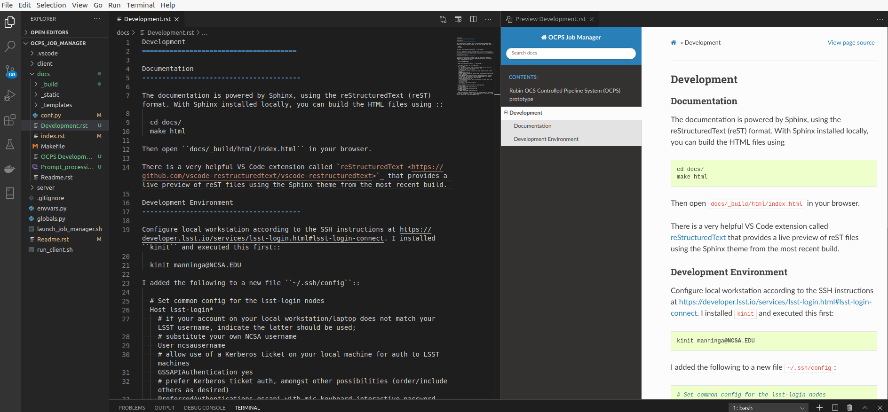

Development¶
Network access¶
Before you can develop and deploy, you must first configure your workstation to gain access to the target networks and platforms.
Step 1: VPN access¶
NCSAnet VPN¶
Access to the NTS and Integration clusters requires use of the NCSAnet VPN. Install the Cisco Anyconnect compatible openconnect package and open the network settings.
sudo apt-get install network-manager-openconnect-gnome
Add a new VPN with gateway sslvpn.ncsa.illinois.edu and protocol “Cisco AnyConnect”. The defaults for the rest are fine. Enable the VPN and choose the group “ncsa-vpn-default”. Enter your NCSA username and password. The second password is either (1) a code generated by your 2FA hardware key or (2) the literal word “push”, which then triggers your Duo 2FA app.
LSST VPN¶
Access to the Summit cluster requires the LSST VPN. Follow the instructions in this PDF document.
Step 2: SSH access¶
Configure your local workstation according to the SSH instructions at
https://developer.lsst.io/services/lsst-login.html#lsst-login-connect.
Install kinit and execute this first:
kinit [username]@NCSA.EDU
Add the following to the SSH config file ~/.ssh/config:
# Set common config for the lsst-login nodes
Host lsst-login*
# if your account on your local workstation/laptop does not match your LSST username, indicate the latter should be used;
# substitute your own NCSA username
User [username]
# allow use of a Kerberos ticket on your local machine for auth to LSST machines
GSSAPIAuthentication yes
# prefer Kerberos ticket auth, amongst other possibilities (order/include others as desired)
PreferredAuthentications gssapi-with-mic,keyboard-interactive,password
# forward your local Kerberos ticket to the login node if you need to continue to another LSST server after the login
GSSAPIDelegateCredentials yes
# configure OpenSSH Control Master "multiplexing" (to allow reuse of an initial connection)
ControlMaster auto
ControlPath ~/.ssh/cm_socket_%r@%h:%p
ControlPersist 5m
# Define aliases onto full hostnames for each login node
Host lsst-login01
HostName lsst-login01.ncsa.illinois.edu
Host lsst-login02
HostName lsst-login02.ncsa.illinois.edu
Host lsst-login03
HostName lsst-login03.ncsa.illinois.edu
Determine the IP address of the Kubernetes API server, either by documentation or a technique like this example using ping, where lsst-nts-kubh01.ncsa.illinois.edu is the NTS cluster API server hostname:
$ ping -c 1 lsst-nts-kubh01.ncsa.illinois.edu
PING lsst-nts-kubh01.ncsa.illinois.edu (141.142.238.20) 56(84) bytes of data.
64 bytes from lsst-nts-kubh01.ncsa.illinois.edu (141.142.238.20): icmp_seq=1 ttl=59 time=15.7 ms
Establish an SSH tunnel as shown below, authenticating with your password and Duo 2FA, forwarding the Kubernetes API server port 6443 to localhost. This will allow kubectl to connect through the firewall. Replace 141.142.X.Y with the IP address of the API server.
ssh -L 127.0.0.1:6443:141.142.X.Y:6443 lsst-login
Step 3: kubectl access¶
A cluster admin will provide you with a kubeconfig file that kubectl uses for authentication. The example below assumes you have such a kubeconfig for the NCSA Test Stand (nts) stored in ``$HOME/.kube/config.nts-cluster. Copy this kubeconfig file to $HOME/.kube/config.nts-cluster.proxy, replacing the server URL as shown below and adding the insecure-skip-tls-verify: true` option due to the SSH tunnel.
apiVersion: v1
clusters:
- cluster:
insecure-skip-tls-verify: true
server: https://127.0.0.1:6443
name: nts-cluster
contexts:
- context:
cluster: nts-cluster
user: username
name: cluster-user@nts-cluster
current-context: cluster-user@nts-cluster
kind: Config
preferences: {}
users:
- name: username
user:
client-certificate-data: REDACTED
client-key-data: REDACTED
Activate the kubeconfig in any new terminal session prior to executing helm or kubectl with:
export KUBECONFIG="$HOME/.kube/config.nts-cluster.proxy"
Step 4: Source code repository access¶
The source code repos are publicly available, but to push changes you will need to be added to the relevant groups.
Code repo structure¶
There are two subfolders client and server that contain the code for the client and server, respectively. The server is the UWS API server. The client is an optional second deployment provided for testing the server from within the cluster. (See the section below that describes how to connect to the UWS server from outside the cluster.)
The Docker image defining both of these deployments is defined by the Dockerfile at the repo root, and the deployment definitions specify a container command like cd server && python3 server.py which actually starts the Tornado webserver.
Source code sync scripts¶
To rapidly iterate on code, use the sync scripts to push local files into the running containers. To update the UWS server, from the root directory of your clone of https://github.com/lsst-dm/uws-api-server, run :
./k8s_sync_server.sh $NAMESPACE $APP_NAME
where $NAMESPACE is the name of the Kubernetes namespace in which the
pod is deployed and $APP_NAME is the app= selector. Similarly to update the UWS client code use :
./k8s_sync_client.sh $NAMESPACE $APP_NAME
For example, if you had a development release deployed with pod label app=dev-uws-server you would execute
./k8s_sync_server.sh uws dev-uws-server
Local client to remote API server¶
There is an ingress included in the Helm chart that provides access to the API at for example https://lsst-nts-k8s.ncsa.illinois.edu/dev-uws-server/api/v1. This is secured by basic HTTP auth with a k8s Secret uws-server-basic-auth that is not provided by the chart. You must manually create this secret to use this secure development URL.
export BASICAUTHUSER=client
export BASICAUTHPASS=$(openssl rand -hex 32)
echo "The password is: $BASICAUTHPASS"
cat <<EOF | kubectl -n uws apply -f -
apiVersion: v1
kind: Secret
metadata:
name: uws-server-basic-auth
annotations:
username: $BASICAUTHUSER
password: $BASICAUTHPASS
type: Opaque
data:
auth: $(htpasswd -nb client $BASICAUTHPASS | tr -d '\n' | base64)
EOF
See the example Python script client/client.local.py that you can use to make requests to the API server remotely using this method.
Documentation system¶
This documentation is powered by Sphinx, using the reStructuredText (reST) and Markdown formats. With Sphinx installed locally, you can build the HTML files using :
cd $REPO_ROOT/docs/
./build_docs
There is a very helpful VS Code extension called reStructuredText that provides a live preview of reST files using the Sphinx theme from the most recent build.

File editors and viewers¶
The .drawio files require the open source editor from
https://www.diagrams.net/.
The Python extension for VS Code will resolve modules better if you
include a /.vscode/settings.json (this file is deliberately ignored
via /.gitignore) with the configuration:
{
"python.analysis.extraPaths": [
"server"
],
"restructuredtext.confPath": "${workspaceFolder}/docs"
}